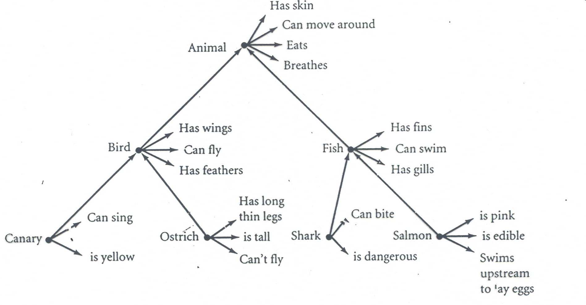
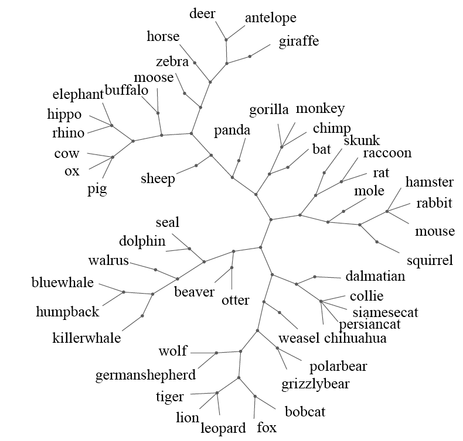
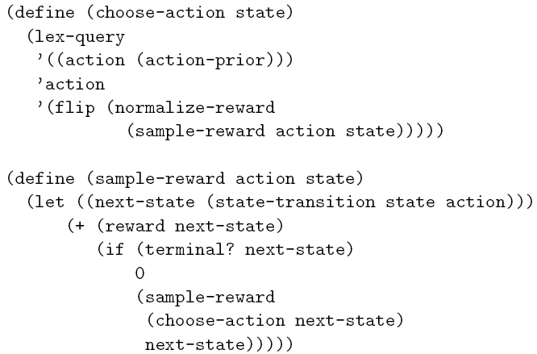

Outline for lectures
• Introduction
• Cognition as probabilistic inference
• Learning concepts from examples
(continued)
• Learning and using intuitive theories (more
structured systems of knowledge)

“tufa”
“tufa”
“tufa”
Learning from just one or a few examples, and mostly
unlabeled examples (“semi-supervised learning”).
Simple model of concept learning
“This is a blicket.”
“Can you show me the
other blickets?”
Learning to learn: what object
features count for word learning?
This is a dax.
• 24-month-olds show the shape
bias with simple novel objects.
20-month-olds do not. (Landau,
Show me the dax…
Smith, Jones 1988)
• Smith et al (2002) trained 17-
“lug”
month-olds on labels for 4
“wib”
artificial categories:
• After 8 weeks of training (20
min/week), 19-month-olds
“zup”
“div”
show the shape bias.
Transfer to real-world vocabulary
The intuition: Learn that shape varies across categories but is
relatively constant within nameable categories.
The puzzle: The shape bias is a powerful inductive constraint,
yet can be learned from very little data.


Learning about feature variability
(Kemp, Perfors & Tenenbaum, Dev. Science 2007)
?


Learning about feature variability
(Kemp, Perfors & Tenenbaum, Dev. Science 2007)
?


A hierarchical Bayesian model
Level 3:
Prior expectations
on bags in general
Level 2:
Bags in general
Simultaneously
infer
Level 1:
…
Bag proportions
Data
…


A hierarchical Bayesian model
Level 3:
Prior expectations
on bags in general
α =
Level 2:
0.1 (within-bag variability)
β
Bags in general
(overall population distribution)
Level 1:
Bag proportions
…
…
Data
…


A hierarchical Bayesian model
Level 3:
Prior expectations
on bags in general
α =
Level 2:
5
(within-bag variability)
β
Bags in general
(overall population distribution)
Level 1:
Bag proportions
…
Data
…

Learning the shape bias
(Kemp, Perfors & Tenenbaum, Dev. Science 2007)
Assuming independent Dirichlet-
multinomial models for each
“lug”
dimension …
“wib”
“zup”
“div”
Training
… we learn that:
– Shape varies across categories
but not within categories.
– Texture, color, size vary across
and within categories.


Second-order generalization test
(Kemp, Perfors & Tenenbaum, Dev. Science 2007)
1st order gen
2nd order gen
This is a dax.
Show me the
dax…
Training
Test
“blessing of
abstraction”


A more realistic model
Prior expectations on
categories in general
Categories in general
Individual
categories
…?
Data
?
?
?
?
42571507 - 1
50614667 - ?
23648160 - ?
30746502 - 4
56315442 - ?
73046446 - ?
78640370 - 2
31242541 - ?
73616235 - ?
11577707 - ?
41502465 - ?
16616311 - ?
30252135 - ?
30746502 - ?
56643025 - ?
41670016 - ?
(Perfors & Tenenbaum, Proc Cog Sci 2009)


A more realistic model
Prior expectations on
categories in general
Categories in general
Individual
categories
y
z
y
z
y
z
y
z
Data
42571507 - 1
23648160 - 2 56643025 - 3
30746502 - 4
11577707 - 1 73046446 - 2 50614667 - 3
31242541 - 4
41670016 - 1
78640370 - 2
56315442 - 3 30252135 - 4
41502465 - 1
73616235 - 2
16616311 - 3
60240453 - 4
(Perfors & Tenenbaum, Proc Cog Sci 2009)


A more realistic model
Prior expectations on
categories in general
Categories in general
Individual
categories
y
z
y
z
y
z
y
z
y
z
Data
42571507 - 1
23648160 - 2 56643025 - 3
30746502 - 4
88998899 - 5
11577707 - 1 73046446 - 2 50614667 - 3
31242541 - 4
41670016 - 1
78640370 - 2
56315442 - 3 30252135 - 4
41502465 - 1
73616235 - 2
16616311 - 3
60240453 - 4
2nd order generalization:
88994271 - 5? or 42718899 - 5?
(Perfors & Tenenbaum, Proc Cog Sci 2009)


A more realistic model
Prior expectations on
categories in generalLearning the base
distribution of a DP
mixture
Categories in general
Individual
categories
y
z
y
z
y
z
y
z
y
z
Data
42571507 - 1
23648160 - 2 56643025 - 3
30746502 - 4
88998899 - 5
11577707 - 1 73046446 - 2 50614667 - 3
31242541 - 4
41670016 - 1
78640370 - 2
56315442 - 3 30252135 - 4
41502465 - 1
73616235 - 2
16616311 - 3
60240453 - 4
2nd order generalization:
88994271 - 5? or 42718899 - 5?
(Perfors & Tenenbaum, Proc Cog Sci 2009)

Model vs. People
1st order generalization
1st order generalization
2nd order generalization
2nd order generalization
lization
lization
a
a
% correct gener
% correct gener
Category labels
Category labels
Category labels
Category labels
absent
present
absent
present
% coherence:
% coherence:
lization
lization
a
a
% correct gener
% correct gener
(Perfors & Tenenbaum, Proc Cog Sci 2009)
Towards more natural concepts
Towards more natural concepts
CRP mixture:

How many different ways to
structure a domain?
(Shafto, Kemp, Mansingka, Tenenbaum, 2006; submitted)
“CrossCat”: nonparametric clustering over features, with a
different clustering of objects for each feature-cluster.
How many different ways to
structure a domain?
(Shafto, Kemp, Mansingka, Tenenbaum, 2006; submitted)
“CrossCat”: nonparametric clustering over features, with a
different clustering of objects for each feature-cluster.
Evidence for CrossCat-like learning
in humans:
- Sorting natural categories
- Sorting artificial categories
- Predicting values for novel
features and novel objects
Learning relational concepts
CONCEPTS
Professors
Graduate students
Undergraduates
RELATIONSHIPS
Professors give advice to Grad students and Undergrads.
Grad students give advice to Undergrads.
Undergrads give advice to no one.
Learning relational concepts
CONCEPTS
Magnets
Magnetic objects
Non-magnetic objects
RELATIONSHIPS
Magnets interact with each other.
Magnets and Magnetic objects interact.
Magnetic objects do not interact with each other.
Non-magnetic objects do not interact with anything.
Learning relational concepts
person 1 gives advice to person 9
people
people


Learning relational concepts
gives advice to
gives advice to
people
Prof Grads Ug
Profs
Grads
people
Ugrads
Infinite Relational Model (IRM)
(Kemp, Griffiths, Tenenbaum, Yamada, & Ueda, 2006)
1 4
2 6
7 3
8
9 5
0.1
0.9
0.9
0.1
0.1
0.9
0.1
0.1
0.1
Learning algorithm
• Continuous parameters (weights/probabilities)
integrated out analytically.
• Gibbs sampling + split-merge moves:
Iteration 1
Iteration 2
Iteration 3
Iteration 4
Iteration 5
Iteration 6
The causal blocks world
(Tenenbaum and Niyogi, 2003)
G
F
O
W
C
L
A
C
The causal blocks world
(Tenenbaum and Niyogi, 2003)
G
F
O
W
C
L
A
C
Training
Test
F
?
A
O
G
W
X
?
C
B
A
C
L
Learning curves
9
8
7
p
g U 6
tin
igh 5
Pre
f L
Post Same Group
d o 4
Post Different Group
oo
lih 3
e
k
Li 2
1
Probability of lighting up 0
1
2
3
4
5
3 6 9 12 15
Model predictions
Stage (# of objects / 3)
# of objects observed

Constructing semantic networks
(Collins & Quillian, 1969)
Upper level medical ontology

Upper level medical ontology
Biomedical predicate data used to construct
ontology in UMLS (McCrae et al.):
– 134 concepts: enzyme, hormone, organ, disease, cell
function ...
– 49 predicates: affects(hormone, organ),
complicates(enzyme, cell function), treats(drug,
disease), diagnoses(procedure, disease) …
Learning semantic networks with IRM
concept
predicate
concept
Biomedical predicate data from UMLS (McCrae et al.):
– 134 concepts: enzyme, hormone, organ, disease, cell function ...
– 49 predicates: affects(hormone, organ), complicates(enzyme, cell
function), treats(drug, disease), diagnoses(procedure, disease) …


Learning semantic networks with IRM
e.g., Diseases affect
Chemicals interact
Chemicals cause
Organisms
with Chemicals
Diseases

Learning semantic networks with IRM
Relations
between
clusters:
e.g., Diseases affect
Chemicals interact
Chemicals cause
Organisms
with Chemicals
Diseases
Extracting semantic networks from text via
relational clustering (Kok & Domingos 2008)
Tested several algorithms for relational clustering on TextRunner data:
~ 2 million triples of the form R(x, y): e.g., upheld(Court, ruling),
named_after(Jupiter, Roman_god).
~ 10,214 R symbols, 8942 x symbols, 7995 y symbols (each appears >25 times).
Annotated hierarchies model
(Roy, Kemp, Mansinghka & Tenenbaum, 2007)
Annotated hierarchies model
(Roy, Kemp, Mansinghka & Tenenbaum, 2007)


The Mondrian Process
(Roy & Teh, 2008; in prep)
The Mondrian Process
(Roy & Teh, 2008; in prep)

“tufa”
“tufa”
“tufa”
Learning from just one or a few examples, and mostly
unlabeled examples (“semi-supervised learning”).

Learning words for objects
“tufa”
“tufa”
“tufa”
(Collins & Quillian, 1969)
(IT population responses
Hung et al., 2005; c.f.
Kiani et al. 2007)


Learning words for objects
Bayesian inference over tree-
structured hypothesis space:
(Xu & Tenenbaum,
Psych. Review 2007;
Schmidt & Tenenbaum,
in prep)
“tufa”
“tufa”
“tufa”


Learning words for objects
Bayesian inference over tree-
structured hypothesis space:
(Xu & Tenenbaum,
Psych. Review 2007;
Schmidt & Tenenbaum,
in prep)
People
Model
“tufa”
“tufa”
“tufa”


Hierarchical Bayesian framework
F: form
Tree
S: structure
“tufa”
“tufa” “tufa”
F1
F2
F3
F4
D: data
…
…
Learning to learn: what is the right
form of structure for the domain?
F: form
Tree
Space
Order
X1
X1
X1
X2
X2
X2
X3
X3
X3
X4
S: structure
X4
X5
X4
X6
X6
X5
X5
X6
Features
X1
X2
D: data
X3
…
X4
X5
X6

The value of structural form knowledge:
inductive constraints (bias)
Mystery city …
- average annual temperature: 66 F / 19 C
- voted 60% for George W Bush in 2004
- popular foods are fried and BBQ


Property induction
(Kemp & Tenenbaum, Psych. Review 2009; Shafto et al., Cognition 2008)
Given that {X , …, X } have property P, how likely is it that Y does?
1
n
Tree
2D
Horses
All mammals
Tree
2D
Minneapolis
Houston


Property induction
(Kemp & Tenenbaum, Psych. Review 2009)
Given that {X , …, X } have property P, how likely is it that Y does?
1
n
Tree
2D
1
1
−
Horses
All mammals
Property ~ N ( ,
0 (Δ +
I
N ( ,
0 exp( 1
− || x − x ||)
σ
i
j
)
2
) )
σ
(Zhu, Lafferty & Ghahramani, 2003)
(c.f. Lawrence, 2004)
Tree
2D
Minneapolis
Houston


Property induction
(Kemp & Tenenbaum, Psych. Review 2009; Shafto et al., Cognition 2008)
Given that {X , …, X } have property P, how likely is it that Y does?
1
n
Tree
Smooth: P(D|S) high
Not smooth: P(D|S) low
2D
1
1
−
Horses
All mammals
Property ~ N ( ,
0 (Δ +
I
2
) )
σ
(Zhu, Lafferty & Ghahramani, 2003)
Tree
2D
Minneapolis
Houston
Learning structural forms
People can discover structural forms…
– Scientists
Linnaeus
Darwin
Mendeleev
Kingdom Animalia
Phylum Chordata
Class Mammalia
Order Primates
Family Hominidae
Genus Homo
Species Homo sapiens
– Children
e.g., hierarchical structure of category labels, cyclical structure of seasons or
days of the week, clique structure of social networks.
… but standard learning algorithms assume fixed forms.
– Principal components analysis: low-dimensional spatial structure
– Hierarchical clustering: tree structure
– k-means clustering, mixture models: flat partition.

Hypothesis space of structural forms
(Kemp & Tenenbaum, PNAS 2008)
Form
Process
Form
Process


A hierarchical Bayesian approach
(Kemp & Tenenbaum, PNAS 2008)
P(F)
F: form
x
P(S | F)
Simplicity
X1
X1
X2
X2
X1
X2
X6
S: structure
X3
X3
X3
X4
X4
X5
X5
X4
X5
X6
P(D | S)
X6
Smoothness
Features
(Fit to data)
X1
X2
D: data
X3
…
X4
X5
X6

features
animals
cases
judges
objects
similarities
objects
Development of structural forms
as more data are observed
“blessing of abstraction”


Causal learning and reasoning
Causal
model
Event
data
(Griffiths & Tenenbaum;
Kemp, Goodman, Tenenbaum)


Causal learning and reasoning
Behaviors
Diseases
Symptoms
Causal
high-fat diet
heart disease
coughing
schema
working in factory
lung cancer
chest pain
…
…
…
Cut down hypothesis
Causal
space from size
model
521,939,651,343,829,
405,020,504,063
to
131,072
Event
data
(Griffiths & Tenenbaum;
Kemp, Goodman, Tenenbaum)

Laws
Classes
η
‘B’
‘B’ ‘D’ ‘S’
z
‘D’
1 2
‘B’ 0.0 0.3 0.01
3 4
5 6
7 8
Causal
‘D’ 0.0 0.0 0.25
schema
Infinite
0.0 0.0 0.0
9 10
‘S’
‘S’
relational
11 12
model
9
5
1
10
Causal
6
model
2
11
7
Belief net with
3
12
8
Dirichlet-
4
multinomial
Event
1 2 3 4
5 6 7 8
9 10 11 12
parameterization
data
Patient 1
Patient 2
Patient 3
Patient 4
Patient 5
…
(Mansinghka, Kemp, Tenenbaum, Griffiths, UAI 2006)
1
2
3
4
5
6
Ground-truth
causal network
7
8
9
10
11
12
13
14
15
16
20 80 1000
# samples
Causal model
recovered
model
Event data
“blessing of abstraction”
1 2 3
7 8 9 10
4 5 6
0.4
11 12 13
recovered
Causal schema
… c
14 15 16
1
…
schema
… c2
Causal model
recovered
model
Event data
(Mansinghka, Kemp, Tenenbaum, Griffiths, UAI 2006)
Conclusions
How does the mind get so much from so little, in learning about objects,
classes, causes, scenes, sentences, thoughts, social systems?
A toolkit for studying the nature, use and acquisition of abstract knowledge:
– Bayesian inference in probabilistic generative models.
– Probabilistic models defined over a range of structured representations: spaces,
graphs, grammars, predicate logic, schemas, programs.
– Hierarchical models, with inference at multiple levels of abstraction.
– Nonparametric models, adapting their complexity to the data and balancing
constraint with flexibility.
An alternative to classic “either-or” dichotomies: Nature versus Nurture, Logic
(Structure, Rules, Symbols) versus Probability (Statistics).
– How can domain-general mechanisms of learning and representation build
domain-specific abstract knowledge?
– How can structured symbolic knowledge be acquired by statistical learning?
A different way to think about the development of a cognitive system.
– Powerful abstractions can be learned surprisingly quickly, together with or prior
to learning the more concrete knowledge they constrain.
– Structured representations need not be rigid, static, hand-wired, brittle.
Embedded in a probabilistic framework, they can grow dynamically and
robustly in response to the sparse, noisy data of experience.
Open directions and challenges
• More precise relation to psychology
– How does human cognitive processing perform
approximate probabilistic inference (i.e., approximately
implement rational methods of approximate inference)?
• Relation to the brain
– How to implement structured probabilistic models in
neural architectures?
• Probabilistic models for richly structured knowledge
– How to formalize an intuitive theory of physics or
psychology?
• Effective learning of structured probabilistic models
– How to balance expressiveness/learnability tradeoff?
Goal-directed action
(production and comprehension)
(Wolpert et al., 2003)
Goal inference as inverse
probabilistic planning
constraints
goals
(Baker, Tenenbaum & Saxe, Cognition, in press)
rational planning
(MDP)
Gergely,
actions
Agent
Csibra et al.:
Inferring social goals
constraints
goals
(Baker, Goodman & Tenenbaum, Cog
constraints
goals
rational planning
Sci 2008; Ullman, Baker, Evans,
(MDP)
Macindoe & Tenenbaum, submitted)
rational planning
(MDP)
actions
Agent
Hamlin, Kuhlmeier, Wynn & Bloom:
actions
Agent
Subject
ratings
n
o
cti
Model
predi
Subject
ratings
n
o
cti
Model
predi
The really big questions
Where does it all end?
Across different domains and tasks, and different levels of abstraction, our
probabilistic models are starting to look increasingly complex and to differ
in almost arbitrarily many ways. This seems unsatisfying…
The brain appears to have a uniform circuitry. Other cognitive modeling
paradigms adopt a single unifying representational primitive (production
rules, predicate logic, synaptic strengths, tensors). Is there a single
universal Bayesian primitive?
How does it all begin?
Can all these different kinds of representations be learned? What is the
ultimate hypothesis space of innate primitives – or is it simply “turtles all
the way up”? Could a universal hypothesis space for all probabilistic
models possibly be searched effectively?
(C.f. Kolmogorov complexity theory, Chater & Vitanyi)
Church: a universal probabilistic language
(Goodman et al., UAI 2008)

Church: a universal probabilistic language
(Goodman et al., UAI 2008)
Causal networks

Church: a universal probabilistic language
(Goodman et al., UAI 2008)
Causal networks
Relational schema


Church: a universal probabilistic language
(Goodman et al., UAI 2008)
Causal networks
Relational schema
Physical objects



Church: a universal probabilistic language
(Goodman et al., UAI 2008)
Causal networks
Relational schema
Physical objects
Rational agents
Open directions and challenges
• More precise relation to psychology
– How does human cognitive processing perform
approximate probabilistic inference (i.e., approximately
implement rational methods of approximate inference)?
• Relation to the brain
– How to implement structured probabilistic models in
neural architectures?
• Probabilistic models for richly structured knowledge
– How to formalize an intuitive theory of physics or
psychology?
• Effective learning of structured probabilistic models
– How to balance expressiveness/learnability tradeoff?
Document Outline
- Outline for lectures
- Slide Number 2
- Simple model of concept learning
- Learning to learn: what object features count for word learning?
- Transfer to real-world vocabulary
- Slide Number 6
- Slide Number 7
- A hierarchical Bayesian model
- A hierarchical Bayesian model
- A hierarchical Bayesian model
- Learning the shape bias �(Kemp, Perfors & Tenenbaum, Dev. Science 2007)
- Second-order generalization test �(Kemp, Perfors & Tenenbaum, Dev. Science 2007)
- A more realistic model
- A more realistic model
- A more realistic model
- A more realistic model
- Model vs. People
- Towards more natural concepts
- Towards more natural concepts
- How many different ways to structure a domain?
- How many different ways to structure a domain?
- Learning relational concepts
- Learning relational concepts
- Learning relational concepts
- Learning relational concepts
- Infinite Relational Model (IRM) (Kemp, Griffiths, Tenenbaum, Yamada, & Ueda, 2006)
- Learning algorithm
- Slide Number 32
- Slide Number 33
- Slide Number 36
- Constructing semantic networks
- Upper level medical ontology
- Upper level medical ontology
- Learning semantic networks with IRM
- Learning semantic networks with IRM
- Learning semantic networks with IRM
- Extracting semantic networks from text via relational clustering (Kok & Domingos 2008)
- Annotated hierarchies model �(Roy, Kemp, Mansinghka & Tenenbaum, 2007)
- Annotated hierarchies model �(Roy, Kemp, Mansinghka & Tenenbaum, 2007)
- The Mondrian Process �(Roy & Teh, 2008; in prep)
- The Mondrian Process �(Roy & Teh, 2008; in prep)
- Slide Number 48
- Learning words for objects
- Slide Number 50
- Slide Number 51
- Hierarchical Bayesian framework
- Learning to learn: what is the right form of structure for the domain?
- The value of structural form knowledge: inductive constraints (bias)
- Property induction
- Property induction
- Property induction
- Learning structural forms
- Hypothesis space of structural forms�(Kemp & Tenenbaum, PNAS 2008)
- A hierarchical Bayesian approach�(Kemp & Tenenbaum, PNAS 2008)
- Slide Number 61
- Slide Number 62
- Development of structural forms as more data are observed
- Causal learning and reasoning
- Causal learning and reasoning
- Slide Number 69
- Slide Number 70
- Conclusions
- Open directions and challenges
- Goal-directed action (production and comprehension)
- Goal inference as inverse�probabilistic planning
- Inferring social goals
- The really big questions
- Church: a universal probabilistic language
- Church: a universal probabilistic language
- Church: a universal probabilistic language
- Church: a universal probabilistic language
- Church: a universal probabilistic language
- Open directions and challenges